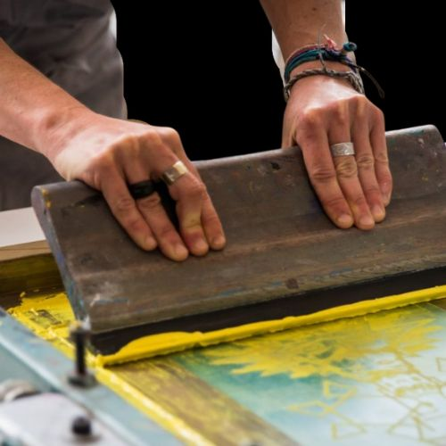
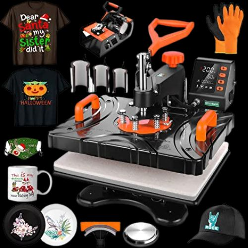
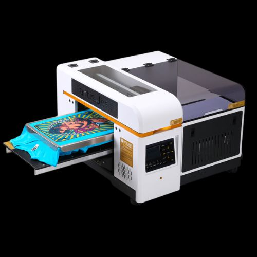

Serigrafia:
Es mas utilizada para la parte textil, la estampa no pierde definición a lo largo de las aplicaciones, sin importar el número.
- Para que productos sirve:
Es principalmente utilizada para la parte textil
- Tiempo de duracion:
Alta durabilidad, no se percude con el lavado ni el tiempo
- Colores:
Se pueden utilizar hasta seis colores
- Tipos de tela:
- 100%Algodon
- Lienzos
- Tusor
- Gabardina
- Canvas o loneta
- Lonas
- Gasa
- Poliester
- Tiempo de elaboracion:
Una semana
- Costo:
Es una tecnica economica
Sublimacion:
Este sistema se recomienda para estampados con mucho detalle, definición o imágenes muy pequeñas
- Para que productos sirve:
- Textiles (remeras, pantalones, buzos, gorras, etc)
- Termos
- Tusor
- Mates
- Vidrio
- Jarras
- Tiempo de duracion:
El resultado es una unión química estable, duradera y de excelente calidad.
- Colores:
Se pueden utilizar cualquier tipo de color. Tiene mejor resultado en fondos claros.
- Tipos de tela:
Se recomienda mas sobre poliester, ya que para algodon debe pasar por un procedimiento previo.
- Tiempo de elaboracion:
30 mins por sublimado
- Costo:
Es un tipo de estampado mas costoso ya que se utilizan tintas especiales para llevar a cabo este proceso. Se utiliza maquinaria de alto costo.


Impresion directa:
Es la tecnica mas reciente en el mundo textil.
- Para que productos sirve:
Telas
- Tiempo de duracion:
Excelente durabilidad
- Colores:
Puede aplicarse sobre cualquier tipo y color de tela
- Tipos de tela:
Casi todas!
- Tiempo de elaboracion:
30 mins por impresion + 15 min de fijacion
- Costo:
Es el mas costoso por sus tintas!